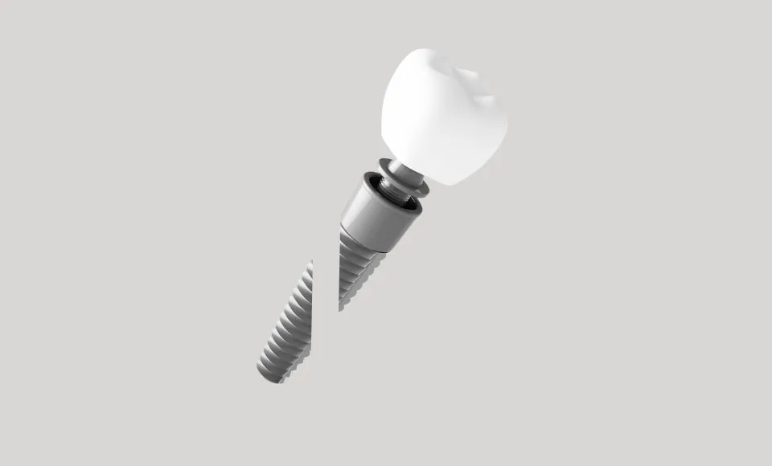
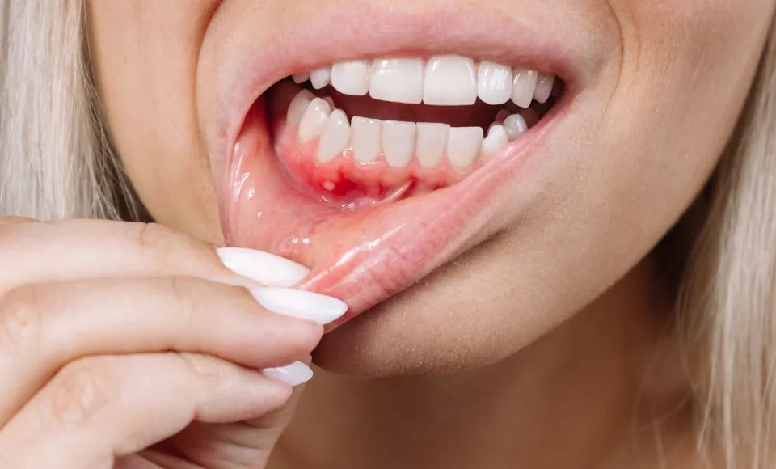

Dentures should not only be aesthetic but also functional; therefore, with the developing implant technology, dental implants continue to be a popular choice. One of the most important factors affecting the long-term success of implants is their harmonious integration with surrounding tissues. In certain cases, implant removal may also be necessary. (In fact, only just under three per cent of all dental implants used need to be replaced or removed within five years.) These include damage to the jawbone, serious accidents, poor dental hygiene or gum disease. Akdeniz Dental at Antalya will advise you on all aspects of dental implants in Turkey.
Can dental implants be removed?
Yes, dental implants can be removed. However, the removal procedure can be quite invasive and depending on the condition of the bone in which the implant is placed, additional surgical procedures may be required. The bone tissue around the implant and the health of the surrounding tissues should also be taken into consideration during this procedure.
When does a dental implant need to be removed? 4 cases

1-Trauma
Firstly, damage to the jawbone can affect the stability of the implant, which in turn adversely affects the function of the implant. Trauma to the jawbone, especially as a result of serious accidents, increases the load on the implant and leads to implant failure. In this case, dental implant removal and procedures for the healing of the jawbone should be performed.
2-Infection
Inadequate dental hygiene is another important cause of implant failure. Good dental hygiene protects the health of the tissues around the implant and prevents infections such as periimplantitis. However, when dental hygiene is inadequate, problems such as inflammation and bone loss can occur around the implant. In this case, dental implant removal will be necessary.
Before starting any cosmetic/complex treatment, such as dental implants, your oral health is likely to be excellent. In the case of gum disease, symptoms usually appear late and erode the tissue around the implant, leaving you with little choice but to remove the dental implant.

Periimplantitis is one of the most common reasons for implant removal. In this case, inflammation occurs in the tissues around the implant, leading to bone loss over time. Inflammation and bone loss reduce the stability of the implant and lead to implant failure in the long term. In case of periimplantitis, a detailed treatment plan is required to remove the implant and treat the infection.
3-Loose dental implants
Over time, the implant may become loose due to the body's rejection of the implant, improper healing or poor bone density. This looseness can cause discomfort and may require removal.
4-Allergic reactions
Titanium is a highly biocompatible alloy. However, although rare, in some patients, titanium used in dental implants causes an allergic reaction and the implant may need to be removed.
How is a dental implant removed?
The removal of dental implants requires a similar surgical procedure as their placement and is usually performed under local anaesthesia. This procedure begins by making a small incision in the area where the implantation was performed.
The complexity of the operation is directly related to the laxity of the tissues in the area where the implant is to be removed. If the tissues are quite loose, the implant can usually be easily removed using an implant torque wrench. However, if the implant is tightly inserted, more intervention may be required to remove it.
Alternatively, the implant can be removed using bone forceps. These instruments allow the implant to be removed effectively, sparing the surrounding tissues.
In some cases, specialised instruments such as a Lindemann bur may be needed to remove the implant. This drill is used to carefully remove the bone tissue around the implant, making it easier to remove the implant.
Recently, laser technology has also been used for implant removal. Laser procedures offer a minimally invasive approach and minimise the risk of damage to surrounding tissues.
Can a new implant be placed after removal?
After dental implant removal, the suitability and success of re-implantation depends on several factors.
Following procedure, dental implant removal recovery time depends primarily on the degree of bone defect and the condition of the surrounding tissues. If there is a slight bone defect, a new implant can be placed immediately, but a larger diameter may need to be selected. However, in case of severe inflammation or bone loss, a healing process is necessary to ensure a favourable environment for re-implantation.
The healing process usually ranges from a few days to several weeks and includes a phase in which bone formation takes place. In this process, the infection is controlled and the bone tissue is rebuilt. Once the bone has regenerated properly, it is possible to successfully re-implant the implant.
Suitable candidates for re-implantation must undergo a specific healing process to allow the bone tissue to achieve adequate regeneration and stability. It is also important to thoroughly assess the causes of the implant removal and to take the necessary measures.
What is early implant failure?
Possible causes of early implant loss include:
Failure to achieve a complete bone-implant contact: Osteointegration, the solid fusion of the implant with the bone, is the basis for successful implant treatment. However, the formation of fibrous scar tissue between the implant surface and the bone may result from insufficiently stable implant placement. In this case, the implant cannot integrate properly with the bone and may cause early loss.
Failure to follow the rules during the operation: Improper cavity preparation or incorrect application of surgical techniques during implant surgery can lead to complications such as hard tissue damage or bone necrosis. This may adversely affect the osteointegration process and lead to implant loss.
Sterilisation and infection: Inadequate sterilisation of implants and surgical instruments can increase the risk of infection. Infections can affect bone-implant contact and lead to implant loss.
Lack of primary stability: If adequate primary stability is not provided during implant placement, the osteointegration process may fail and implant loss may occur.
Premature loading: Overloading the implant before it has sufficiently fused with the bone may impair the osteointegration process and lead to implant loss.
Systemic diseases and inflammation: Some systemic diseases or local inflammation can interfere with successful union of implants and cause early loss.
For these reasons, careful surgical planning and execution, compliance with sterilisation protocols, and proper placement of implants are important during dental implant treatment. If these factors are not taken into consideration, early implant loss may occur.
What is late implant failure?
Among the late-term causes of dental implant loss, we can list the following:
Peri-implantitis: Infection of the tissues around the implant is one of the most common causes of implant loss. This condition is usually caused by a bacterial infection, such as gum infection, and can lead to bone loss around the implant.
Bone loss: Loss of the jawbone in which the implant is placed can affect the stability of the implant and lead to implant failure in the long term. This may be associated with the implant not integrating harmoniously with the bone or with the resorption of bone tissue over time.
Peri-implant bone loss: The loss of bone tissue around the implant over time can reduce the stability and durability of the implant. This is often associated with peri-implantitis or other biological factors.
Errors in implant placement: Surgical or technical errors in the implant insertion process can be the cause of implant loss. This can include factors such as improper implant positioning, inadequate bone support or implant integration not being correctly integrated.
Incompatibilities: Depending on the implant materials or treatment, the implant may be rejected by the body or cause incompatible reactions. In this case, implant loss may be inevitable.
How can you tell if a dental implant has failed?
We can briefly list the symptoms of a failed dental implant as follows:
- Pain and discomfort
Persistent pain, discomfort or sensitivity in the dental implant may be the first sign that the implant has not healed properly.
- Swelling around the tooth
Significant swelling may indicate that the implant has failed. Gum problems, especially symptoms such as bleeding, redness or gum recession should not be ignored.
- Gaps Between Teeth
The formation of gaps between the teeth around the dental implant may suggest that the implant is not properly placed or that it is not compatible with the surrounding tissues.
- Discolouration or Fading
Discolouration or fading around the tooth may indicate implant problems.
- Difficulty Eating
Having difficulty eating may suggest that the implant is not functional.
- Gum Inflammation
Signs of inflammation in the gums may suggest that the implant is infected or not healing properly.
Dental implant removal: FAQs
Is Dental Implant Removal Painful?
No! Removing a failed dental implant is typically a pain-free procedure. The procedure is performed under local anesthesia and dental sedation.
Can dental implants be removed for cleaning?
When dental implants are placed, they are not removed for cleaning as they are integrated into the surrounding jawbone. There is no need.
Dental Implant Removal Cost?
The dental implant removal cost varies depending on a number of variables. These factors include the type of implant, the complexity of the surgical procedure, the requirements for local anaesthesia or sedation and the experience of the dentist involved. In general, implant removal can be a more complex procedure and therefore more costly. However, as each case is different, it is difficult to give an exact cost for a particular situation. Therefore, it is best to discuss the costs associated with implant removal directly with us.